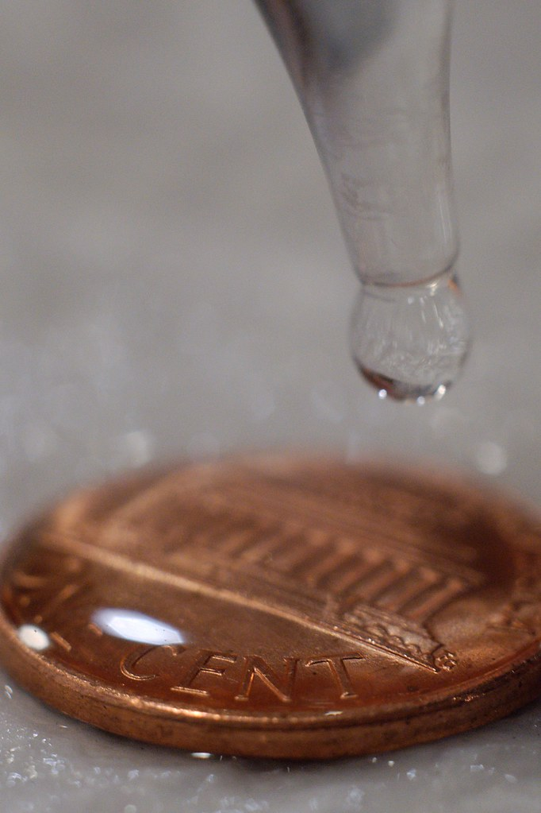

Water sits as a liquid. Air floats as a gas. The difference is the attraction between them.
Covalent bonds hold individual molecules together, but they do not decide if a substance is a solid, liquid, or gas at room temperature. That role belongs to the electrostatic forces of attraction between neighboring molecules. By the end, you can name three intermolecular forces, rank their strengths, and predict boiling point, vapor pressure, and solubility.
Core Claims
- Bonds vs. IMFs: Intramolecular bonds hold atoms together within a molecule. Intermolecular forces (IMFs) are weaker electrical attractions between molecules.
- IMF Types: London dispersion (LDF, in all molecules), dipole-dipole (between polar molecules), and hydrogen bonding (strongest, H-O, H-N, H-F).
- Bulk Properties: Phase transitions disrupt IMFs, not covalent bonds. Stronger IMFs result in higher boiling/melting points and lower evaporation rates.
Intermolecular Attractions
Retrieval Checklist
- Identify the types of IMFs present in a compound.
- Relate IMF strength to boiling points and evaporation rates.
- Explain phase changes as spacing transitions without breaking bonds.
Inside the molecule vs between them.
Two different electrical forces act in a substance. The strong covalent bonds holding the hydrogen and oxygen atoms together inside one water molecule are intramolecular bonds. They take a large amount of energy to break.
Weaker electrical attractions pull neighboring water molecules toward one another. These are intermolecular forces (IMFs). You overcome them during physical phase changes.
When you boil a kettle of water, the steam rising from the spout is still H2O. You have not broken the covalent bonds to separate hydrogen and oxygen gas. You have only added enough thermal energy to break the weak IMFs, so individual water molecules escape from each other into the air.
Thinking that boiling breaks the O–H bonds inside water. Boiling overcomes the forces between molecules, and steam is still H2O.
The electrostatic hierarchy.
Covalent substances experience three primary types of intermolecular forces. They are all electrostatic (opposite charges attracting), but they differ in how their charges are created and how long they last.
1. London Dispersion Forces (LDF)
Temporary, induced dipoles. Electrons are in constant motion. Random electron movement occasionally clusters charge on one side of a molecule. This creates a temporary partial negative charge (δ−) and opposite positive charge (δ+). This temporary dipole repels electrons in a neighboring molecule, inducing a matching dipole. The resulting weak attraction is a London dispersion force (or LDF). LDF is present in all molecules. Larger electron clouds (heavier atoms or more atoms) shift more easily, leading to stronger LDF.
2. Dipole-Dipole Forces
Permanent polar attractions. If two nonmetals have mismatched electronegativities, they share electrons unequally. This permanent polar bond creates permanent partial charges (δ+ and δ−). When polar molecules get close, they align so their opposite poles attract. This permanent electrostatic pull is a dipole-dipole force.
3. Hydrogen Bonding
The strongest polar attraction. When hydrogen bonds directly to nitrogen, oxygen, or fluorine, the electronegativity differences are large. The concentrated lone pairs on these atoms produce strong electrostatic attractions. The electronegative atom pulls shared electron density away, leaving hydrogen's single proton unshielded. This bare, positive hydrogen attracts a negative lone pair on a neighboring molecule. Despite the name, hydrogen bonding is not a true chemical bond; it is a very strong intermolecular force.
Thinking any molecule that contains hydrogen forms hydrogen bonds. Hydrogen must be bonded directly to nitrogen, oxygen, or fluorine. HCl and CH2O do not qualify.
Classify Dominant Intermolecular Forces
Every molecule experiences London dispersion forces, but bulk behavior is dominated by the strongest attraction present. Sort each substance into its primary IMF category.
Thermal energy against intermolecular attractions.
Change the temperature and the substance. Compare carbon dioxide, acetone, and water at room temperature (+20 °C). Thermal energy easily vaporizes nonpolar CO2. It evaporates polar acetone moderately. It leaves hydrogen-bonded water as a cohesive liquid.
Why does a liquid with stronger attractions have less vapor above it at the same temperature?
The explanation appears after you predict.
- Oxygen atom
- Carbon atom
- Hydrogen atom
- Covalent bond (inside a molecule)
- Attraction between molecules
- Vapor pressure column (full at 1 atm)
- Load acetone at 20 °C and press Record. Look for: a vapor pressure near 24 kPa, with several molecules in the vapor above the liquid.
- Load water at 20 °C and press Record. Look for: a vapor pressure near 2.3 kPa, with fewer molecules in the vapor.
- Load acetone at 56 °C and press Record. Look for: the column reaches the 1 atm line. The vapor pressure equals the air pressure, and the liquid boils.
- Load water at 100 °C and press Record. Look for: water needs a much higher temperature than acetone to reach the 1 atm line.
Use your evidence
How we measure the invisible.
We cannot see individual molecules, so we infer their attraction from bulk investigations. Two classic lab tests gather this evidence: evaporation cooling and surface-tension beads.
1. Evaporation Cooling Curves
When a liquid evaporates, it absorbs energy from its surroundings to break its IMFs. The faster it evaporates, the more rapidly it cools. A thermometer bulb wrapped in a soaked tissue will register a temperature drop. Liquids with weaker IMFs evaporate much faster, creating steeper temperature drops.
2. Surface Tension Beads
Molecules on the surface of a liquid are pulled inward by attractions from neighboring molecules below them. This inward force is surface tension. When placed on a flat coin, water molecules pull on each other so strongly that they bead up into a high, rounded dome. Acetone, with weaker forces, spreads out flat and spills off the edge.

Assuming a heavier molecule always has stronger attractions. CO2 is heavier than H2O, but the hydrogen bonds in water make it far harder to pull apart.
3. The IMF Causal Chain
Five steps connect molecular structure to bulk properties. Walk through them for two isomers with the same formula (C₂H₆O): ethanol and dimethyl ether.
"When liquid water is heated to 100°C, thermal kinetic energy causes rapid boiling. During boiling, added heat breaks the strong covalent O–H bonds inside each H2O molecule. This separates the liquid into individual hydrogen and oxygen atoms that bubble away as steam."
Fill the blanks from memory.
Type each blank from memory, then press Check. Press Show answers after your first check if you are stuck.
Covalent bonds inside a molecule are . The attractions between separate molecules are . Temporary attractions from shifting electron clouds are . Attractions between permanently polar molecules are . The exceptionally strong IMF that forms when hydrogen bonds directly to N, O, or F is . Stronger IMFs hold molecules tighter, leading to a higher but a lower . The inward pull on a liquid's surface that makes water form beads is .
Explain why water (H₂O) has a much higher boiling point than carbon dioxide (CO₂), even though carbon dioxide is a much larger and heavier molecule.
Explain it in plain English. Link the types of forces to the energy needed to boil the liquid.
Water molecules can form hydrogen bonds (O–H bonds present), which are exceptionally strong intermolecular attractions. Carbon dioxide is a nonpolar molecule and can only form weak London dispersion forces (LDF). Even though CO₂ has a larger electron cloud, London dispersion forces break easily. In contrast, water's strong hydrogen bonds require far more thermal energy to disrupt.
Write your answer first. Then grade yourself.
Give yourself 1 mark for each idea you wrote down.
Acetone (C₃H₆O) forms dipole-dipole attractions. Ethanol (C₂H₅OH) forms hydrogen bonds. Compare their intermolecular force strengths, predict which substance evaporates faster at room temperature, and explain how evaporation rate relates to vapor pressure.
- Strengths (1 mark): You say ethanol forms hydrogen bonds (strongest) and acetone forms dipole-dipole forces (moderate).
- Prediction (1 mark): You say acetone evaporates faster, because its weaker forces are easier for thermal energy to break.
- Escape (1 mark): You say weaker forces let more molecules leave the surface at a given temperature.
- Vapor pressure (1 mark): You link more gas molecules above the liquid to a higher vapor pressure for acetone.
Geckos walk on glass using intermolecular forces. Geckos scale sheer vertical walls using millions of microscopic hairs (setae) on their feet. Because the hairs can get incredibly close to smooth glass, the gecko's grip relies entirely on the weak, collective attraction of London dispersion forces (LDFs).
Adaptive Competency Practice: HS-PS1-3
Test your mastery of intermolecular forces, bulk properties (boiling point, vapor pressure, evaporation), and experimental limitations one question at a time. The adaptive engine identifies individual skill gaps, provides tutoring hints on missed questions, and awards an official authenticated completion receipt.